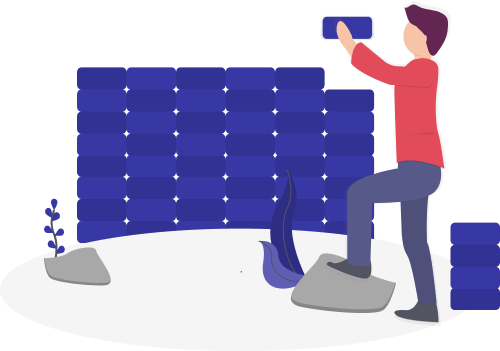

2012-2020 © RICoS, a.s.
Created by kubalaweb.sk 
RICoS, a.s. je spoločnosť ktorej hlavnou aktivitou je vykonávanie činností Určených technických zariadení plynových tlakových, elektrických. Nedeštruktívne skúšanie dráhových oceľových mostných konštrukcií, konštrukcií podobných mostom, koľajníc dráhových, zdvíhacích a dopravných vozidiel.
Inšpekčný orgán spoločnosti RICoS, a.s. – IO RICoS používa pri svojej činnosti len také postupy a metódy inšpekcie, ktoré trvale zabezpečujú zachovanie dôvernosti pri všetkých informáciách, ktoré získal pri výkone inšpekcie.IO RICoS nezverejňuje informácie o klientoch do verejne dostupného priestoru.
Výnimku zo záväzku dôvernosti o konkrétnom predmete inšpekcie alebo žiadateľovi predstavuje situácia, kedy musí inšpekčný orgán uvoľniť informácie (napr. pre Dopravný Úrad, šetrenie nehodovej udalosti a pod.), alebo na základe zmluvného vzťahu so SNAS.
Výnimku zo záväzku dôvernosti o konkrétnom predmete inšpekcie alebo žiadateľovi predstavuje situácia, kedy musí inšpekčný orgán uvoľniť informácie (napr. pre Dopravný Úrad, šetrenie nehodovej udalosti a pod.), alebo na základe zmluvného vzťahu so SNAS.
2012-2020 © RICoS, a.s.
Created by kubalaweb.sk